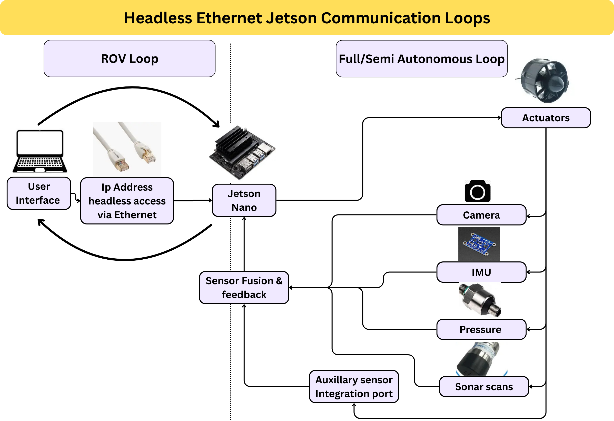

ORCA is our in-house Autonomous Underwater Vehicle (AUV) project, designed as a robust, neutral-buoyant platform for underwater exploration.
We built the AUV frame and hull, assembled the electronics inside the hull, and carefully designed the structure to maintain near-neutral buoyancy.
A custom buoyancy control box and a variable center-of-gravity (COG) mechanism allow fine adjustments for stable underwater operation while housing the thrusters and sensors securely.
Control & Perception
The AUV uses a Jetson Nano for high-level control, including visual perception, sensor fusion, and actuation decision-making.
A dedicated ESP32 module executes low-level thruster commands, receives sensor feedback, and relays data back to the Jetson in real-time.
This separation of high- and low-level control ensures precise maneuvering and responsive control loops.
Testing & Limitations
While we could not access a clear water environment for autonomous testing, the ORCA system functions as a fully tethered ROV,
controlled via Ethernet from a laptop. The ROV setup allowed verification of sensor readings, thruster responsiveness, and telemetry.
Overall, the design demonstrates a near-neutral buoyant platform capable of supporting future autonomous operations with minimal manual intervention.
We have a step by step documentation of our project in the following sections.
Feel free to dive deep into our documentation in the github links however you
like !
A : Simulation Stack
We developed a custom simulation environment for ORCA in both
Gazebo and NVIDIA Isaac Sim. The underwater world was first designed in Blender,
then physics and hydrodynamics were applied in Gazebo to realistically simulate
water behavior. Using ROS, we tested the ORCA control architecture within this
environment and integrated simulated visual feedback to validate our navigation
stack before deploying it on the physical AUV.
Learn more
B : Mechanical Stack
The ORCA AUV’s mechanical design evolved through iterative improvements focusing on
buoyancy, stability, and maneuverability. Initial aluminum frames
required excessive counterweights, leading to high inertia and energy consumption.
In Version 2, we optimized the 3D-printed PETG frame, integrated a variable
center-of-gravity system, and designed modular electronics chambers,
achieving near neutral buoyancy and improved underwater control.
Additionally, a custom 6-DOF manipulator was developed for precise
underwater interactions, making the AUV both robust and versatile for autonomous
operations.
Learn more

C : Electrical Stack
The ORCA AUV’s electrical system is designed for robust underwater operation,
integrating two 4S Li-ion batteries with modular buck converters to supply power for
ESCs, ESP32 controllers, and the Jetson Nano. Dual ESP32s manage thruster
control, sensors, and manipulator actuation, communicating with the
Jetson Nano over UART for real-time decision-making. A custom PCB handles
high-current power distribution, relay isolation, and compact logic
integration, ensuring efficient, reliable, and modular electronics
for autonomous underwater navigation.
Learn more
E : ROS software Stack
Our navigation stack is designed for real-time decision-making with GPU-accelerated
processing. Using DMA and zero-copy memory, sensor data is efficiently streamed to
the GPU for parallel computation. A potential fields method guides trajectory
generation by balancing attraction toward the goal and repulsion from obstacles,
ensuring smooth and collision-free paths. On top of this, we apply vehicle kinematic
and dynamic constraints so that the planned trajectory remains feasible for the
AGV’s steering, braking, and acceleration limits.
Learn more